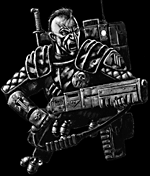
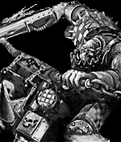

|
The imperium has been fortifying Armageddon since the last invasion 50 years ago. Old regiments, decimated by the orks, have been re-established, and new specialized units have been created to defend against just such an incursion.
In addition to the forces on Armageddon, the ever vigilant companies of the Legiones Astartes (Space Marines) and the Adepta Sororitas (Sisters of Battle) are ready to intervene on the side of the Emperor. They rejoice in the opportunity to cleanse this system of all alien menace.
Click the above link to access a comprehensive list of the Imperium presence in the Armageddon Sector.
|

|
He who lives for nothing is nothing.
He who dies for the Emperor is a hero.
|
a |
|

|
Ghazghull has managed to assembled tribes of orks from the far corners of the galaxy. Under any other leader these hordes would soon fall upon each other, but the prophetic Warlord commands the utmost respect and fear.
The power being brought to bear by Ghazghull is astounding. The forces of the great despot Gazgrim are reputed tobe 200 warbands and 20 gargants, the over-fiend Octarius has roughly the same number of warbands and nearly 200 battle fortresses, and Warlord Ghazghkull himself commands nearly twice as many troops.
Click the above link to access a comprehensive list of the Ork presence in the Armageddon Sector.
|
Me is am da tuffezd guy in da unniverz.
Da Waagh! be wif yu.
|